第 5 讲：数据驱动角色动画——动捕、重定向、过渡与运动图
从动作捕捉获取数据，到重定向、过渡混合、运动图合成，打通一条数据驱动角色动画的完整管线
◆ 学完这一讲，你应该能
能说清关键帧动画与动作捕捉的区别，以及动捕数据在游戏/影视/医疗/机器人等领域的用途
能列举现代动捕系统的主要类型（机械/惯性/光学/无标记/稀疏传感器）及其优缺点
能描述运动重定向要解决的核心差异（骨骼数量、命名、参考姿势、比例、结构）和一条可行的重定向管线
能写出两段运动过渡时的姿态混合公式，并解释为什么直接混合会产生脚滑/穿透等问题
能解释朝向坐标系（Facing Frame）的构造与旋转分解方法，并推导两段运动对齐所需的刚体变换
能说明运动图（Motion Graph）如何通过距离图找过渡点、用状态机组织片段并支持交互式合成
核心结论速记
动作捕捉是“记录真人运动”的数据来源，关键帧动画是“手工摆姿势”，两者互补而非替代。
现代动捕分机械外骨骼、惯性 IMU、光学标记点、无标记多目/深度相机、稀疏传感器几类，精度、成本、便携性各不相同。
运动重定向要跨越骨骼数量/命名/参考姿势/骨长比例/骨骼结构的差异，典型管线是：映射骨骼名→缩放位移→复制或重定向旋转→IK 后处理修脚滑与自穿透。
两段运动直接拼接会在过渡帧出现姿态不连续，解决办法是在过渡区间内对姿态做线性插值：p(t) = (1−t)p_i + t p_{i+1}。
当两段运动来自不同朝向时，需要先把它们变换到同一个“朝向坐标系”下再混合，否则混合结果会扭曲。
朝向坐标系（Facing Frame）是随角色水平移动、一个轴指向角色朝向的特殊坐标系，旋转可分解为绕 y 轴的朝向旋转与剩余旋转的乘积。
运动图把长运动切成片段，节点是片段、边是可能的过渡，用状态机在运行时根据用户输入/环境选择下一条边。
距离图（Distance Map）用两两姿态之间的距离找局部极小值作为候选过渡点，是自动切分运动片段的实用工具。
011. 从关键帧到动作捕捉：为什么需要真实运动数据
传统角色动画靠关键帧动画（Keyframe Animation）：动画师在时间轴上摆出关键姿势，中间帧由插值生成。这种方式可控、表现力强，但制作成本高，尤其是大量写实的人体运动（走、跑、跳、转身）很难靠手摆做到自然。
动作捕捉（Motion Capture，简称动捕） 换了个思路：直接数字化记录真人/动物/物体的运动，把传感器或相机采集到的位置/旋转序列转成骨骼动画数据。课件给出的应用面很广：
- 娱乐：游戏、电影、虚拟偶像、元宇宙；
- 体育：专业训练、动作优化；
- 医疗：骨科、损伤诊断与治疗；
- 机器人：跟踪与定位；
- 以及其他需要真实人体运动的场景。
从历史看，动捕的思想早于计算机：1878 年 Eadweard Muybridge 用连续摄影研究马的运动（“The Horse in Motion”），本质是用照片记录运动；1914 年前后 Max Fleischer 发明转描（Rotoscoping），把实拍影像逐帧描成动画，迪士尼《白雪公主》（1939）、《爱丽丝梦游仙境》（1951）以及万氏兄弟的《铁扇公主》（1941）都用过类似技术。3D 时代则把“描”换成了“解算骨骼”，但核心仍是“用真实运动驱动虚拟角色”。
对自学者的意义：动捕数据是 3A 游戏角色动画的“原材料”，理解它的来源与局限，才能判断什么时候该用动捕、什么时候该手 K 或程序化生成。
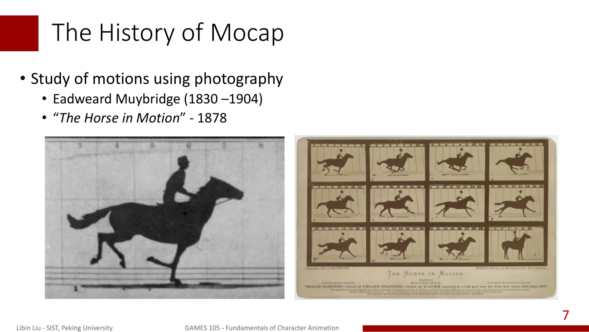
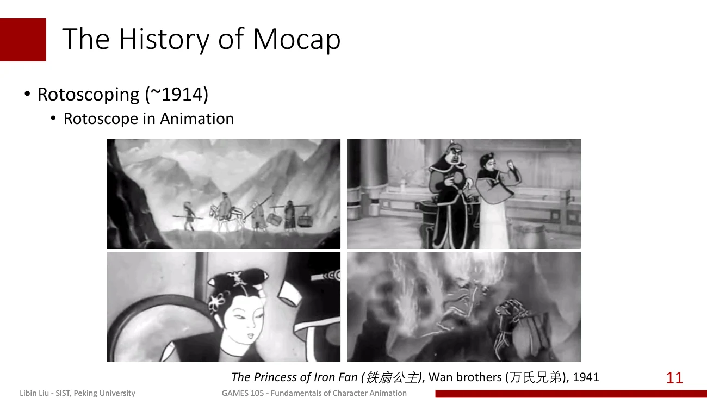
补充说明
课件此处是历史铺垫，重点记住“动捕=记录真实运动”这一定位。
常见坑
把动捕当成“万能”：动捕数据有噪声、有标记点遮挡、有脚滑，直接拿来用往往需要清理和后处理。
以为转描和动捕是一回事：转描是 2D 逐帧描摹，动捕是 3D 骨骼解算，数据形态不同。
UE / Unity 落地
UE/Unity 都支持导入 FBX 动捕数据；UE 的 Live Link 可实时接收动捕流，Unity 有 Live Capture 包。
实际项目中动捕数据通常先导入 DCC（Maya/MotionBuilder）清理，再进引擎。
022. 现代动捕系统的几条技术路线
课件把现代动捕系统分成几类，每类的原理和取舍不同：
- 机械式动捕（Mechanical Mocap）：用外骨骼（Exoskeleton） 直接测量关节角度。优点是抗遮挡、可户外；缺点是穿戴笨重、限制动作幅度。
- 惯性动捕（Inertial Mocap）：用惯性测量单元（IMU），典型是 3 轴加速度计 + 3 轴陀螺仪（各 3 自由度），可选配磁力计等。优点是便携、无遮挡问题；缺点是积分漂移，长时间使用位置会漂。
- 光学动捕（Optical Mocap）：演员身上贴反光或发光标记点（markers），多台相机从不同视角拍摄，用多视图几何（Multi-view Geometry） 解算标记点三维位置，再反推身体运动。优点是精度高、是影视/3A 的主流；缺点是需要专门场地、标记点会遮挡、后期清理量大。课件引用了 Holden 2018 的“用去噪鲁棒求解光学动捕数据”，说明原始数据需要去噪。
- 无标记多目动捕（Markerless Mocap with Multiple Cameras）：不贴点，直接用多相机视频做人体姿态估计，代表如 Captury、Theia。优点是演员自由；缺点是对光照/遮挡敏感、精度略低。
- 深度相机无标记动捕（Markerless Mocap with Depth Cameras）：用深度相机获取三维信息，成本低、适合消费级。
- 单目视频运动估计（Monocular Video）：从普通视频估计 2D/3D 姿态，如 OpenPose 做 2D 姿态、DeepMotion 做 3D 视频姿态估计。优点是素材易得；缺点是深度歧义大。
- 稀疏传感器运动估计（Sparse Sensor）：只用少量 IMU（如 6 个）实时估计全身 3D 平移与姿态（TransPose, Yi et al. 2021），Meta 也有相关方案，Neural3Points（Ye et al. 2022）用少量点做神经估计。优点是便携实时；缺点是精度和稳定性不如光学。
选型直觉：要影视级精度 → 光学；要户外便携 → 惯性/稀疏传感器；要低成本快速原型 → 视频/深度相机。
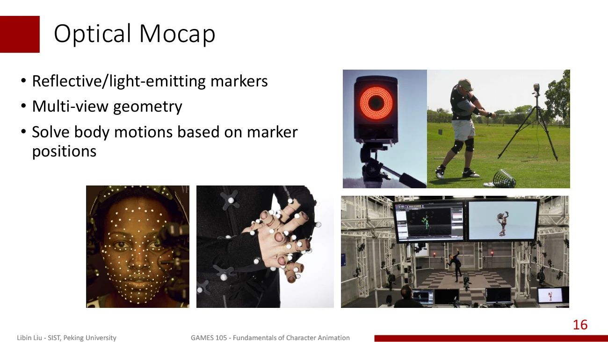
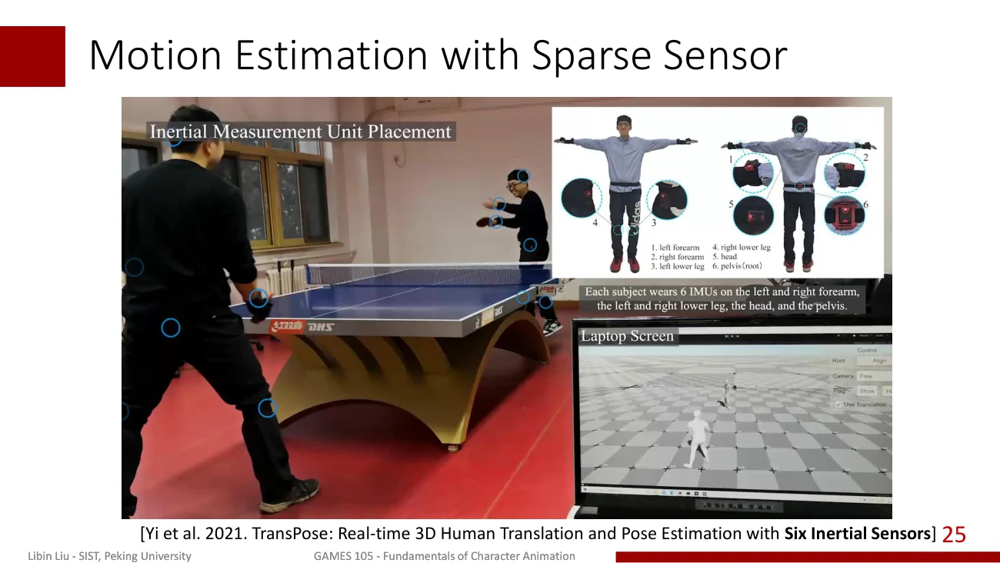
补充说明
课件只给分类与代表系统，不要求推导解算算法。
常见坑
惯性动捕用久了位置漂移 → 因为加速度积分误差累积 → 需要定期用光学/磁力计校正或做零速修正。
光学动捕标记点被遮挡 → 解算出现跳变或缺失 → 需要去噪/补全算法（如课件引用的 Holden 2018）。
单目视频估计的 3D 姿态深度不准 → 单目本身有深度歧义 → 不要直接用于高精度重定向，需多视角或先验。
UE / Unity 落地
UE 的 Live Link 插件可接 OptiTrack/Vicon 等光学动捕，也可接 Xsens 等惯性动捕。
Unity 的 Live Capture 包支持连接 Vicon、OptiTrack 等，实时驱动场景角色。
033. 运动重定向：让一段动捕驱动另一副骨骼
拿到动捕数据后，常见问题是：这段运动是为演员 A 的骨骼录的，怎么驱动游戏里角色 B 的骨骼？ 这就是运动重定向（Motion Retargeting）。课件列出要跨越的差异：
- 骨骼数量不同；
- 骨骼命名不同；
- 参考姿势（reference pose）不同（比如 A-pose vs T-pose）；
- 骨骼长度比例不同；
- 骨骼结构不同（比如多一根手指骨、脊椎节数不同）；
- ……
课件给出一条可行的重定向管线：
- 映射骨骼名（Map bone names）：建立源骨骼与目标骨骼的对应表。
- 缩放位移（Scale translations）：根位移按比例缩放，否则小角色会“滑步”。
- 复制或重定向关节旋转以修正参考姿势（Copy or retarget joint rotations to fix reference pose）：如果两副骨骼参考姿势不同，不能直接复制旋转，要先做参考姿势补偿。
- 用 IK 做后处理（Postprocessing with IK）：修脚滑（Foot-skating） 和自穿透（Self penetration） 等问题。
课件还提到 Autodesk Maya 的 HumanIK、Ubisoft Toronto 的 IK Rig 原型，以及 Unreal Engine 的 IK Rig 重定向系统——说明工业界已经把“重定向 + IK 后处理”做成了标准工具链。
直觉理解：重定向不是“复制粘贴旋转”，而是“保持运动的语义（手往哪伸、脚踩哪）在另一副比例不同的骨架上成立”。所以旋转可以复制，但位移要缩放、接触要 IK 修正。
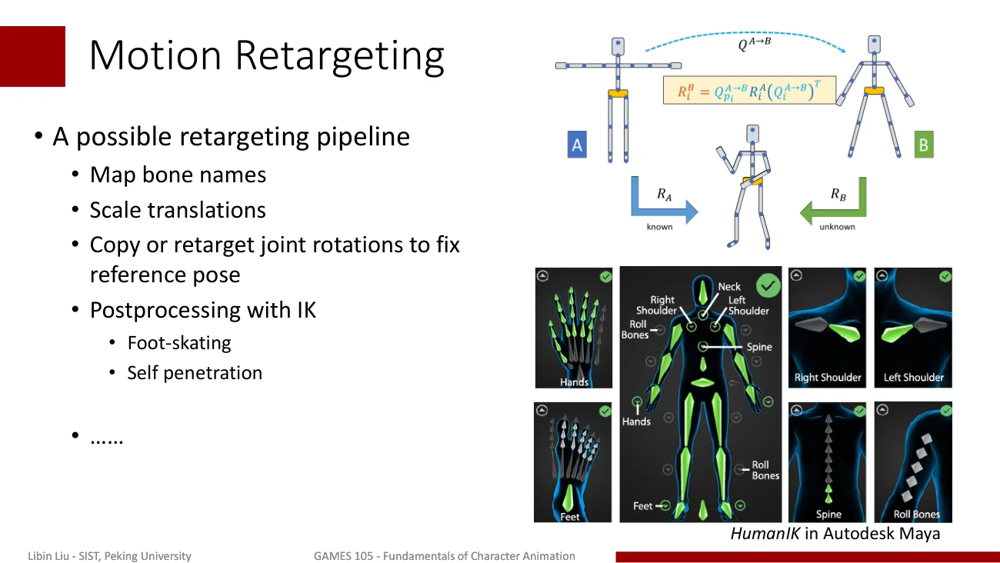
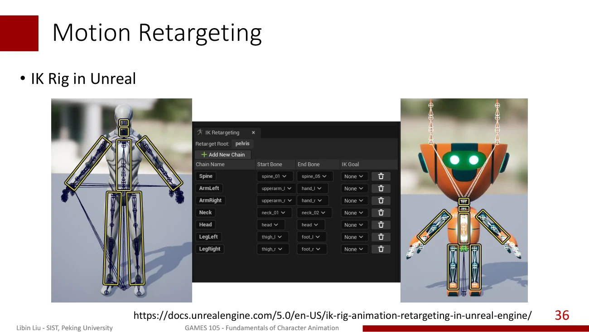
补充说明
课件强调“可能的重定向管线”，不是唯一解；工程上常配合手动修关键帧。
常见坑
直接复制旋转导致姿势扭曲 → 源/目标参考姿势不同 → 先做参考姿势补偿再复制。
小角色脚滑 → 根位移没按比例缩放 → 按目标骨骼腿长比例缩放位移。
重定向后手穿身体 → 只做了旋转复制没做 IK/碰撞后处理 → 加 IK 与自穿透修正。
UE / Unity 落地
UE 的 IK Rig + IK Retargeter 是官方重定向方案：先定义源/目标骨骼链，再在 Retargeter 里配映射与 IK。
Unity 的 Humanoid Avatar 通过肌肉空间（Muscle Space）做重定向，Mecanim 自动处理参考姿势差异。
Maya 的 HumanIK 可做角色间重定向并烘焙回骨骼。
044. 运动过渡：两段动画怎么接才不跳
游戏里角色不会只播一段动画，走→跑→停需要运动过渡（Motion Transition）。最朴素的做法是“播完 A 直接播 B”，但两段运动在切换帧的姿态不同，会出现不连续（discontinuity），视觉上就是“跳一下”。
课件的解法是姿态混合（Pose Blending）：在过渡区间内，把两段运动的姿态按时间做线性插值。设过渡从 \(t=0\) 到 \(t=1\)，当前帧在两段运动中的姿态分别为 \(\mathbf{p}_i\) 与 \(\mathbf{p}_{i+1}\)，则混合姿态为：
\[ \mathbf{p}(t) = (1-t)\,\mathbf{p}_i + t\,\mathbf{p}_{i+1} \]
课件还给出带权重函数 \(\phi(t)\) 的形式：
\[ \mathbf{p}(t) = (1-\phi(t))\,\mathbf{p}_i + \phi(t)\,\mathbf{p}_{i+1} \]
其中 \(\phi(t)\) 从 0 平滑过渡到 1（常用 smoothstep 等缓动），保证速度也连续。
但直接混合两段朝向不同的运动，中间帧会出现“身体被拧”的扭曲。课件因此引入偏移量（offset） 的思路：先算出两段运动在过渡点的姿态差 \(\delta\mathbf{p}\)，再把偏移量“混入”下一段运动：
\[ \mathbf{p}(t) = \mathbf{p}_i + t\,\delta\mathbf{p} \]
直观说：不要硬切，也不要生硬地平均两个朝向不同的姿势；先把差异算出来，再让差异随时间衰减到零。这就是很多引擎里“过渡时间 + 过渡曲线”的数学本质。
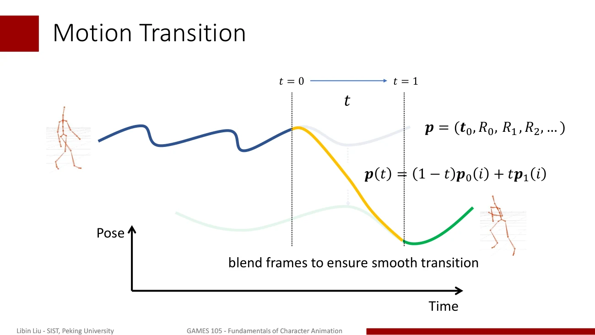
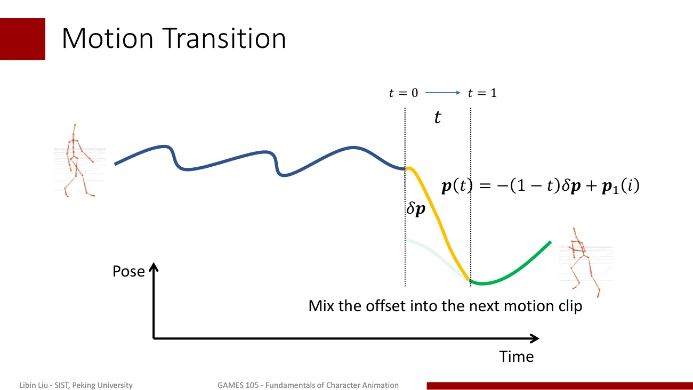
补充说明
课件用 \(\mathbf{p}\) 表示一帧姿态（含根平移与各关节旋转），线性插值对旋转严格来说应做球面插值，课件为讲原理先用线性形式。
常见坑
过渡时间太短 → 姿态变化率过大，看起来“闪” → 加长过渡时间或用缓动曲线。
两段运动朝向差很大时直接线性插值 → 中间帧身体扭曲 → 先对齐朝向坐标系再混合（见下一节）。
只混旋转不混根位移 → 脚滑 → 根位移也要按同一权重混合。
UE / Unity 落地
UE 动画蓝图里的 Blend Space / State Alias 与 Transition Rule 的 Blend Time 就是这里的过渡区间。
Unity Mecanim 的 Transition 有 Has Exit Time 与 Transition Duration，对应过渡时长与曲线。
055. 朝向坐标系与旋转分解：让两段运动“对得上”
两段运动来自不同方向时，直接混合会扭曲。课件引入朝向坐标系（Facing Frame）：一个随角色水平移动、其中一个轴指向角色“面朝方向”的特殊坐标系。它的平移只含水平分量：
\[ \mathbf{t} = (t_x, 0, t_z) \]
旋转 \(R\) 是绕 y 轴的朝向旋转：
\[ R = R_y(\theta) \]
课件给了两种 \(R\) 的定义：一是把全局 z 轴对齐到角色朝向的 y 轴旋转；二是把全局 x 轴对齐到“两肩连线平均方向”的 y 轴旋转。工程上选哪种取决于你的骨骼朝向约定。
更一般地，任意旋转 \(R\) 可以分解为“朝向旋转 \(R_y\)”与“剩余旋转 \(R_{xz}\)”的乘积：
\[ R = R_y \, R_{xz} \]
其中 \(R_y\) 是绕 y 轴的旋转，\(R_{xz}\) 是扣掉朝向后的剩余部分。课件还给出一种求法：先用一个旋转 \(R'\) 把局部 y 轴对齐到全局 y 轴，再令 \(R_y = R' R\)，于是：
\[ R_{xz} = R_y^{T} R \]
这样分解后，两段运动就可以在“朝向坐标系”下比较和混合：朝向差异归 \(R_y\)，身体姿态差异归 \(R_{xz}\)，互不干扰。
有了这个工具，两段运动的对齐变换 \((R, \mathbf{t})\) 就可以算出来：设源运动在过渡点的朝向坐标系为 \((R_1, \mathbf{t}_1)\)，目标为 \((R_2, \mathbf{t}_2)\)，则把源变换到目标坐标系的刚体变换为：
\[ R = R_2 R_1^{T}, \qquad \mathbf{t} = \mathbf{t}_2 - R\,\mathbf{t}_1 \]
（课件写作 \(R_i = R_2 R_1^{T}\)、\(\mathbf{t}_i = R_2(\mathbf{t}_1 - \mathbf{t}_2) + \mathbf{t}_2\) 的形式，本质是同一刚体变换的两种写法，注意平移项要按旋转后的坐标计算。）
直觉：先把两段运动都“摆正”到同一个朝向，再混合，就不会拧麻花。
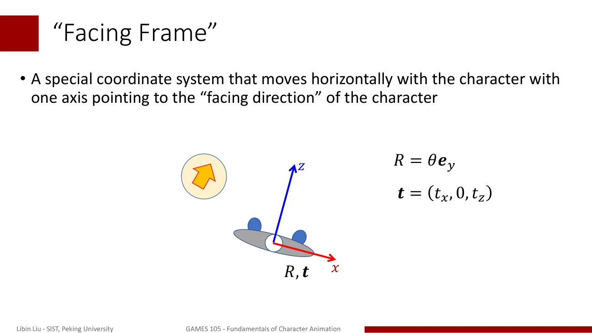
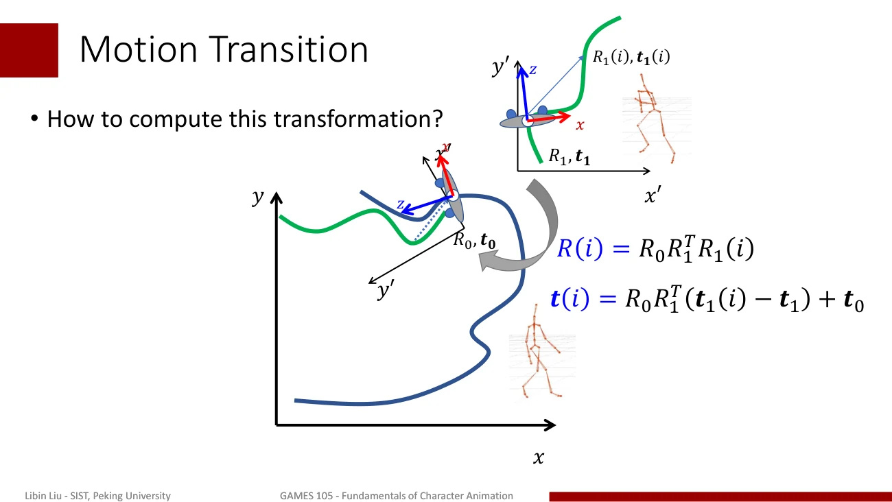
补充说明
课件 P56-P58 是旋转分解的推导，P61 是对齐变换公式；两处符号略有差异，理解“先对齐朝向再混合”即可。
常见坑
朝向坐标系平移带了 y 分量 → 角色会上下飘 → 强制 \(t_y=0\)。
旋转分解顺序写反（\(R=R_{xz}R_y\)）→ 朝向与姿态耦合，混合结果错 → 按课件 \(R=R_y R_{xz}\) 分解。
对齐变换的平移项忘记先旋转 \(\mathbf{t}_1\) → 位置对不上 → 先 \(R\mathbf{t}_1\) 再相减。
UE / Unity 落地
UE 的 Root Motion 与 Facing Direction 概念对应朝向坐标系；动画蓝图里常用“旋转根骨骼到朝向”的节点。
Unity 的 Avatar Root 与 Humanoid 的 Body Orientation 也承担类似角色。
066. 没有根位移的运动与路径拟合
很多动捕数据是原地运动（in-place）：角色在跑步机上跑，根骨骼不产生世界位移。课件专门用几页讲“Motion Data without Root Translation”，并举例 GTA 角色被“带回现实”的视频——说明游戏里大量使用原地动画，再由程序驱动位移。
原地动画的好处：一段跑步可以复用到任意方向、任意速度；坏处：需要路径拟合（Path Fitting） 把原地动画“贴”到一条程序生成的路径上。课件在运动图部分给了 Path Fitting 的例子：给定一条目标路径（比如玩家摇杆方向），在运动图里找一段能匹配该路径的片段，让角色沿路径走。
工程直觉：动画负责“腿怎么动”，程序负责“人往哪走”。这也是 UE 的 Motion Warping、Unity 的 Root Motion Off + 脚本位移的常见组合。
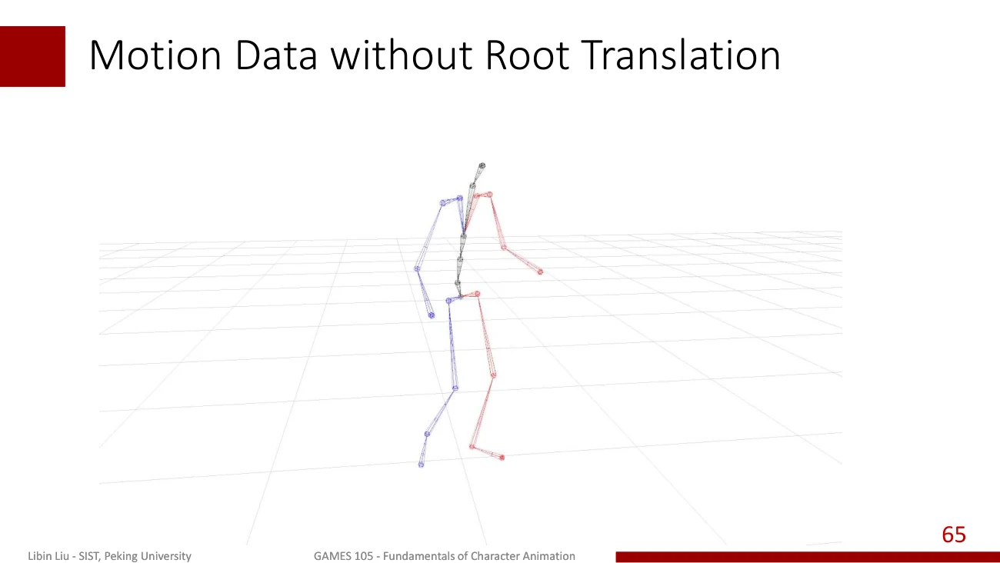
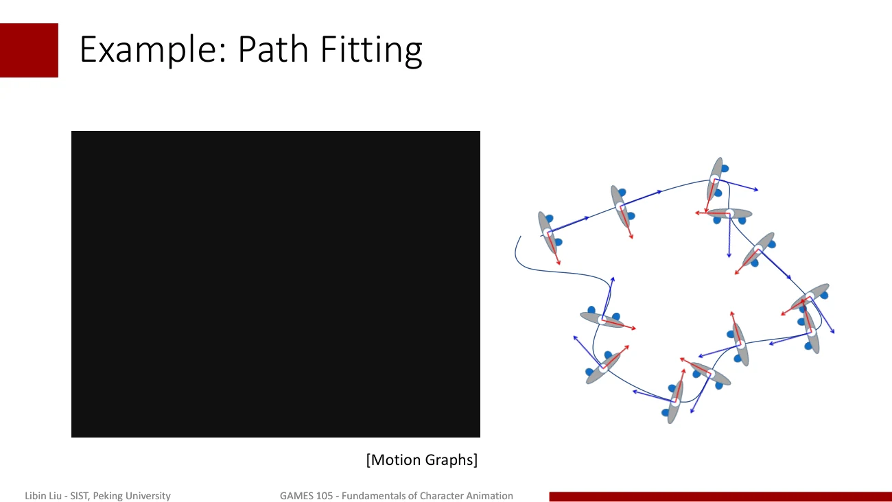
补充说明
课件此处是概念铺垫，Path Fitting 的算法细节在运动图部分展开。
常见坑
原地动画直接开 Root Motion → 角色原地踏步不前进 → 关掉 Root Motion，用脚本/路径驱动位移。
路径拟合时速度不匹配 → 脚滑 → 按路径速度调整播放速率或选匹配速度的片段。
UE / Unity 落地
UE 动画序列可勾选 Enable Root Motion；不需要时关闭，用 Character Movement 驱动。
Unity 的 Apply Root Motion 选项同理；原地动画配合 NavMeshAgent 或自定义位移。
077. 运动合成与运动图：把片段组织成可交互的系统
有了动捕数据、重定向、过渡混合，最后一步是运动合成（Motion Composition）：根据用户控制、环境物体、其他角色的运动，计算生成新的运动。课件引用 Heck & Gleicher 2007 的参数化运动图与 Treuille et al. 2007 的连续控制工作。
核心数据结构是运动图（Motion Graph）：
- 先把长运动切分成片段（Segment Motion Data），比如 turn、walk forward、fall、getup、walk backward、stop；
- 图的节点是片段，边是可能的过渡；
- 运行时用状态机（State-machine） 组织：节点代表运动片段，边代表潜在过渡，当用户输入/片段结束/环境变化时触发过渡，检查直接相连的下一片段，必要时做更深搜索。
在哪里切分？ 课件给出距离图（Distance Map）：横纵轴都是帧，每个像素表示一对姿态之间的差异，局部极小值就是潜在过渡点（两帧姿态最像，切了不跳）。这是 Kovar et al. 2002《Motion Graphs》的经典方法。
运行时管线（课件 P74）可以概括为：检查用户输入 → 检查环境 → 检查其他角色 → 决定过渡 → 取下一帧姿态 → 后处理姿态 → 更新角色 → 更新环境 → 循环。
最后课件提到 Motion Matching：不再以“片段”为单位，而是以姿态（Pose） 为单位，用“短片段 + 原始长运动数据”直接检索最匹配的下一帧。这是运动图之后工业界的主流演进方向（UE5 的 Motion Matching 插件即此思路）。
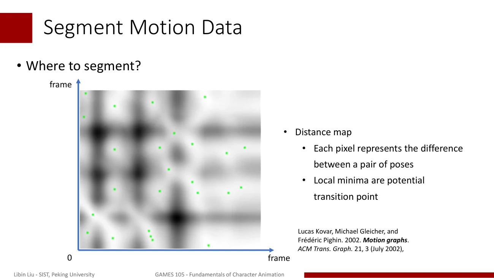
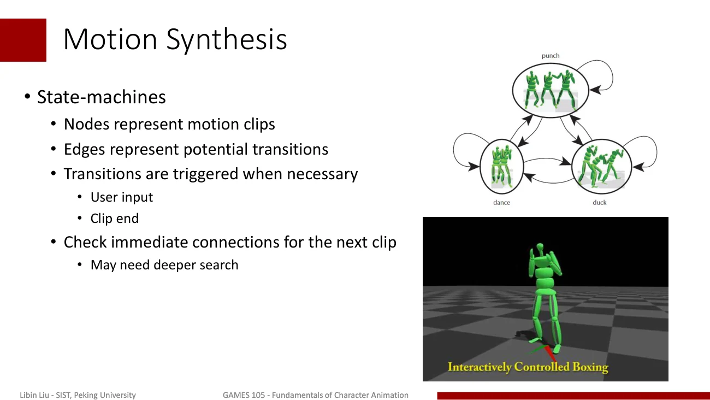
补充说明
课件以概念与经典论文为主，不要求实现完整运动图。
常见坑
切分点选在姿态差异大的地方 → 过渡跳变 → 用距离图找局部极小值。
状态机只查直接相邻边 → 找不到合适过渡 → 允许更深搜索或加过渡片段。
运动图节点太多 → 搜索慢、内存大 → 合并相似片段或转向 Motion Matching。
UE / Unity 落地
UE 的 State Machine + Blend Space 是运动图的简化版；UE5 的 Motion Matching 插件对应“以姿态为单位”的检索。
Unity 的 Animator Controller 状态机 + Blend Tree 同理；Motion Matching 可用第三方包实现。
引擎对照表
| 概念 / 效果 | Unreal Engine | Unity |
|---|---|---|
动捕数据接入 | Live Link 插件（OptiTrack/Vicon/Xsens 等） | Live Capture 包 |
运动重定向 | IK Rig + IK Retargeter | Humanoid Avatar 肌肉空间重定向 |
动画过渡混合 | 动画蓝图 Transition Rule + Blend Time | Mecanim Transition Duration/Curve |
原地动画与位移 | 关闭 Enable Root Motion，用 Character Movement | 关闭 Apply Root Motion，用脚本/NavMeshAgent |
状态机组织片段 | State Machine + Blend Space | Animator Controller + Blend Tree |
姿态级检索合成 | Motion Matching 插件 | 第三方 Motion Matching 包 |
术语双语表
| English | 中文 | 说明 |
|---|---|---|
| Motion Capture | 动作捕捉 | 数字化记录真人/物体运动并转成骨骼动画数据 |
| Keyframe Animation | 关键帧动画 | 动画师摆关键姿势、中间帧插值的传统做法 |
| Rotoscoping | 转描 | 把实拍影像逐帧描成动画的早期技术 |
| IMU | 惯性测量单元 | 加速度计+陀螺仪，惯性动捕的核心传感器 |
| Optical Mocap | 光学动捕 | 反光/发光标记点+多视图几何解算身体运动 |
| Motion Retargeting | 运动重定向 | 把一段运动迁移到骨骼数量/比例/结构不同的角色上 |
| Foot-skating | 脚滑 | 脚与地面接触时仍滑动，重定向/过渡常见问题 |
| Facing Frame | 朝向坐标系 | 随角色水平移动、一个轴指向朝向的特殊坐标系 |
| Motion Graph | 运动图 | 节点是运动片段、边是可能过渡的图结构 |
| Distance Map | 距离图 | 两两帧姿态差异矩阵，局部极小值作过渡点 |
| Motion Matching | 运动匹配 | 以姿态为单位从长运动数据中检索下一帧的合成方法 |
课后练习
01 简述光学动捕与惯性动捕各自的优缺点，并说明为什么影视/3A 项目更常用光学动捕。
查看答案
提示：
从精度、遮挡、便携性、漂移四个角度比较。
光学动捕精度高、可捕捉全身细节，适合影视/3A；缺点是需要专门场地、标记点会遮挡、后期清理量大。惯性动捕便携、无遮挡问题、可户外；缺点是积分漂移、长时间使用位置会漂、精度略低。影视/3A 追求高保真且通常在固定场地制作，所以选光学。
02 两段运动在过渡点的姿态分别为 p_i 与 p_{i+1}，写出过渡区间内的姿态混合公式，并说明 φ(t) 应满足什么条件。
查看答案
提示：
参考课件 P44-P45。
p(t) = (1−φ(t))p_i + φ(t)p_{i+1}，其中 φ(0)=0、φ(1)=1，且 φ 应平滑（如 smoothstep），保证速度连续、过渡不突兀。
03 给定源运动朝向坐标系 (R_1, t_1) 与目标 (R_2, t_2)，写出把源运动变换到目标坐标系的刚体变换 R 与 t。
查看答案
提示：
先旋转对齐，再平移。
R = R_2 R_1^T，t = t_2 − R t_1。即先把源坐标系的点旋转到目标朝向，再平移到目标原点。
04 运动图里“在哪里切分运动片段”为什么用距离图的局部极小值？如果切在差异大的帧会怎样？
查看答案
提示：
距离图每个像素是一对姿态的差异。
距离图局部极小值对应两帧姿态最相似，切在这里过渡最平滑。若切在差异大的帧，过渡时姿态跳变明显，需要更长的混合或额外过渡片段来掩盖。
05 实践题：在 UE 里把一段为 A-pose 骨骼录制的走路动捕重定向到 T-pose 的游戏角色，列出你会做的步骤与可能遇到的问题。
查看答案
提示：
参考重定向四步管线。
步骤：1) 用 IK Rig 定义源/目标骨骼链并映射骨骼名；2) 在 IK Retargeter 里配映射，处理参考姿势差异（A-pose→T-pose 需补偿旋转）；3) 按目标腿长缩放根位移；4) 用 IK 后处理修脚滑与自穿透。可能问题：参考姿势不同导致手臂扭曲、位移未缩放导致脚滑、手穿身体需 IK 修正。